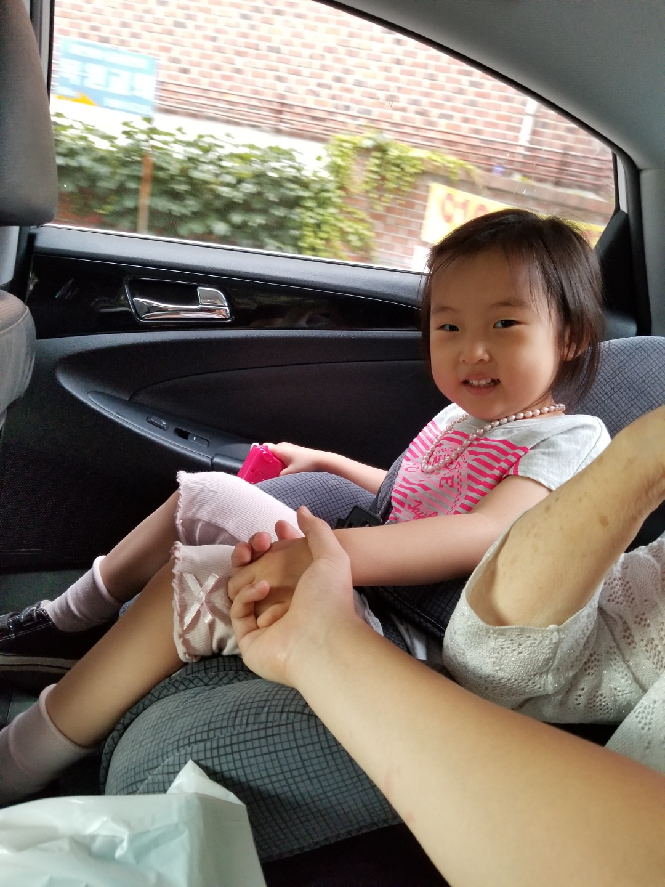
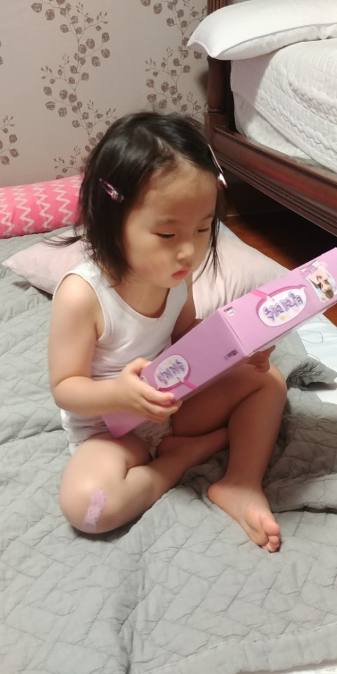
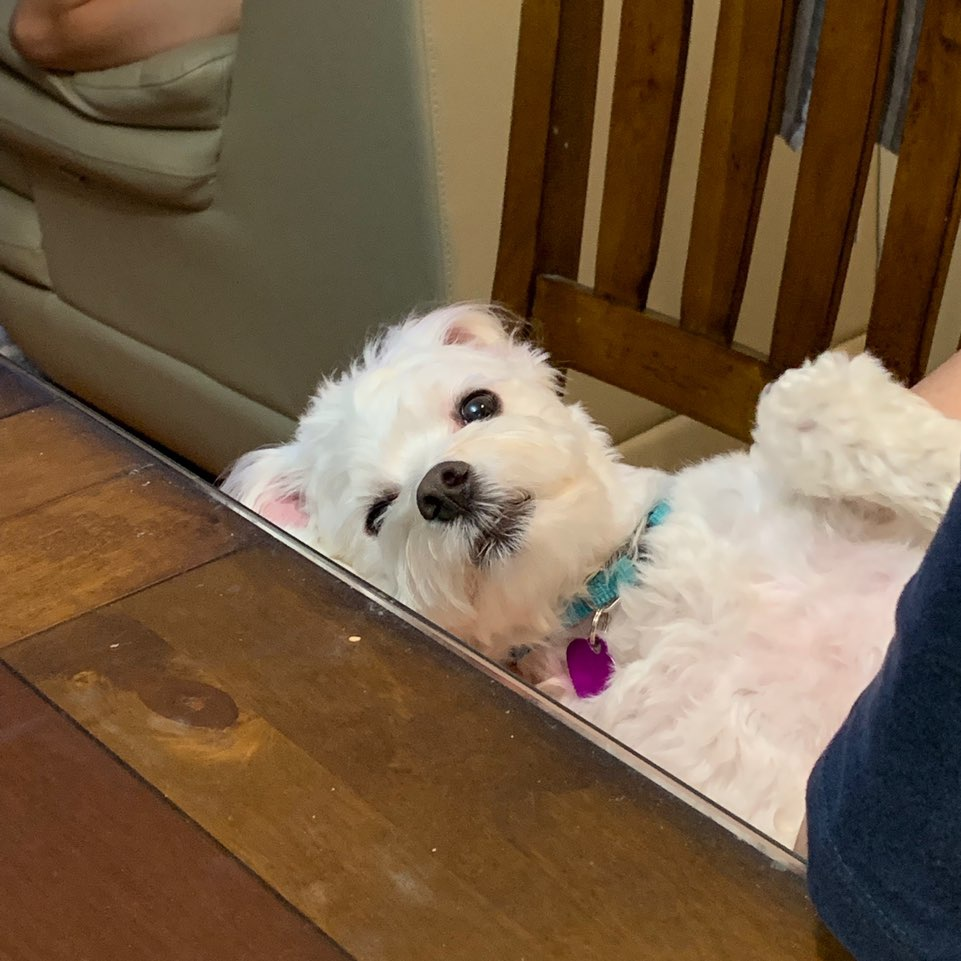
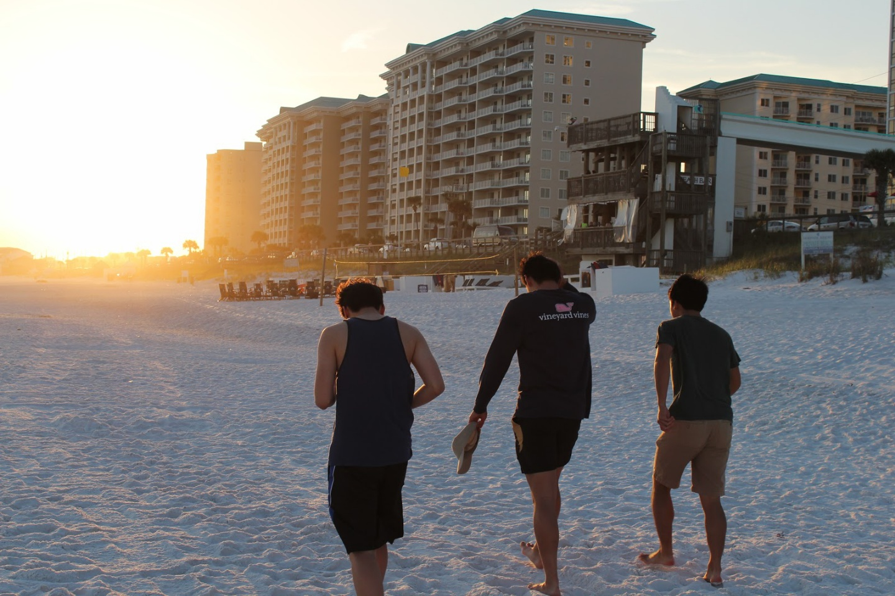
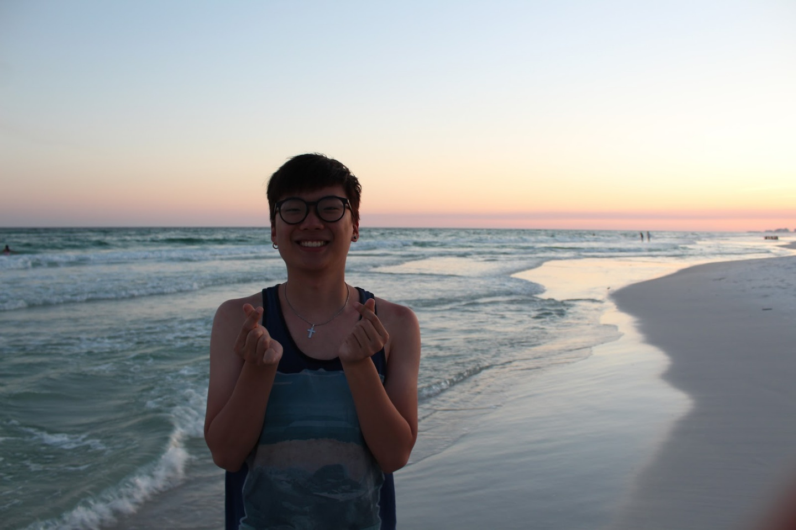
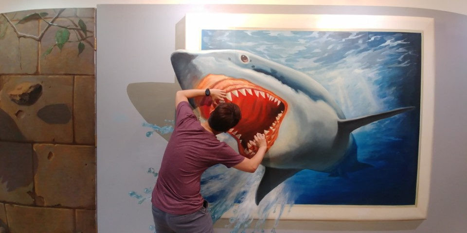
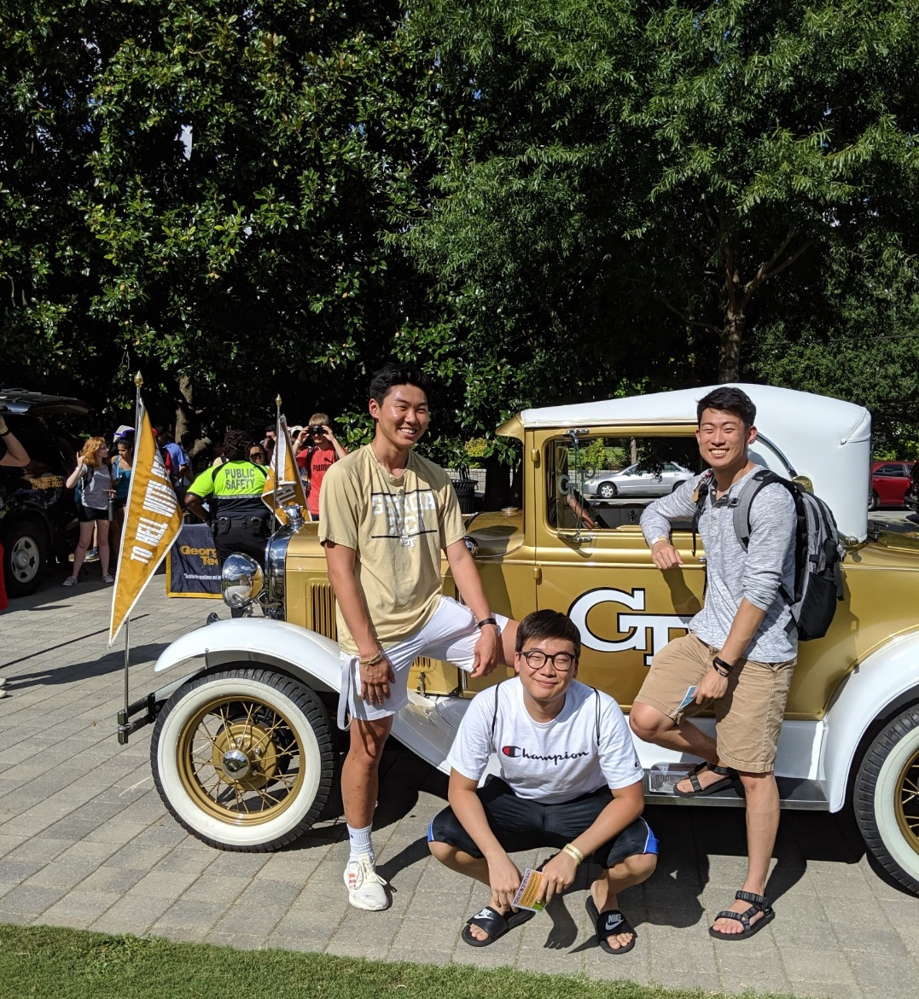

I am a 19 year old CS major at the Georgia Institute of Technology. I am pursuing a BS in CS with threads in information/internetworks and intelligence.
But I am also a son (to many degrees), a nephew, and a loved member of my family.
 I'm a cousin to this beautiful girl who was such a light at such a young age (she's honestly too cute for a photo to capture). This is her waking up receiving a doll that I had bought her! This is honestly what I look like waking up as well, to be fair.
And this is my dog! Well, not really. His name's Toby and my cousins own him (but he's like my own dog). And on the right is my sister and I at my graduation. I guess a brother is yet another thing that I am.
But I'm a cool guy although I may not seem like it at first.
And I am a lover (for all those who accept me and my silly love).
I would also face death and a lot of terrifying things for the ones I love (although I will refrain from saying everything in case I do chicken out from some things).
But most of all, I am a friend. And I am only all the things above because of my friends who care so deeply for me. Because of them who've become a reflection of Christ in my life, I am able to push through all my struggles.